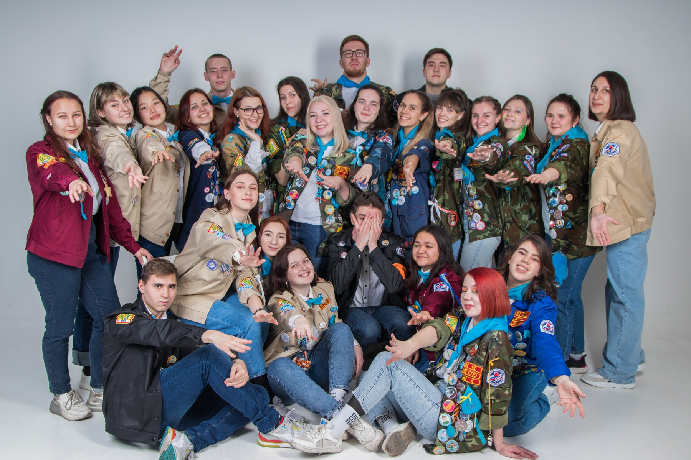

Cтуденческий отряд "ВЕГА"
О нас
Вега – это самая яркая звезда на северном небосклоне, которая находится в созвездии Лиры.
Наш студенческий отряд был создан 23 февраля в 1987 году на факультете педагогики и методики начального образования Иркутского Государственного Педагогического Института, где и базируется по сей день.
За эти годы сменилось много командиров и комиссаров, но каждый боец СПО «Вега» знаком с их именами и фамилиями, они, а также другие бойцы прочно вошли в историю нашего отряда. Мы горды за наших стариков и стараемся достойно продолжать их традиции.
Эмблема отряда - капелька, такая же светлая и чистая как наши мысли и стремления.Бойцы СПО "Вега" носят голубые галстуки.
История работы летом
1987-2014г. – ДОЛ «Металлург» (РКАЗ – СУАЛ), ныне «Олхинский».
2015-2016г. - В ООЦ "Галактика"
2017г. - ДОЛ «Голубые Ели» совместно с СПО «Товарищ».
2018г. - в санатории «Кедр» совместно с СПО «ГНОМ»
2019-2023г.- лагерь олимпийского резерва «СОК УОР», бывшие «Герои космонавтики».
2024г. - ДОЛ "Лукоморье"
Традиции отряда
Объятия при встрече
При встрече мы всегда обнимаемся,
даже если не знаем человека, все равно заключаем его в свои объятия
(ну и, конечно, знакомимся).
Особое прощание
Прощание происходит определенным образом:
все встают в круг, протягивают правую руку вперед, каждый берется за
большой палец соседа и сжимает в кулак. Командир и комиссар стоят рядом
и разбивать их нельзя. Когда командир начинает говорить, все молчат,
а комиссар в это время считает количество людей, стоящих в кругу.
Комиссар ходит по рукам человечком, из 2 пальцев, ведя подсчет.
Когда командир заканчивает говорить, комиссар высказывает свое пожелание
отряду и после фразы «Сильно не дергаем», все начинают произносить речевку
«Всем-всем до свидания, всем-всем добрых дел!».
Речевка перед приемом пищи
Перед каждым совместным приемом пищи
мы произносим речевку. Но каждый пришедший человек должен сам понять, что
говориться в речевке, нельзя отдельно ее проговаривать. Произносится
она очень быстро.
Не едим пока все не соберутся
Игра в ложки
Рисунок на бойцовке
Рисуется после отработанного лета.
Обязательно на рисунке должна присутствовать капелька.
Цвет бойцовки может быть любым.